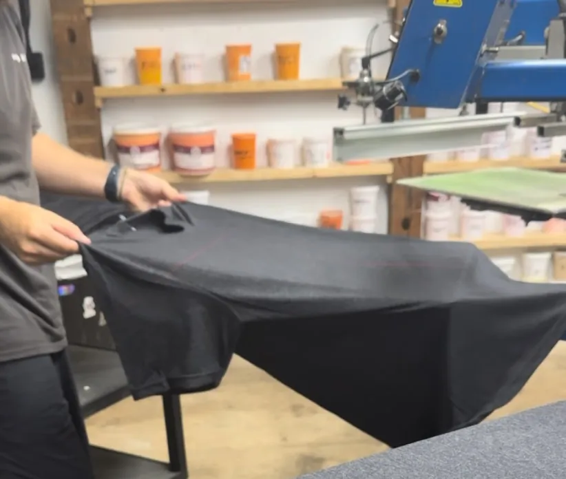
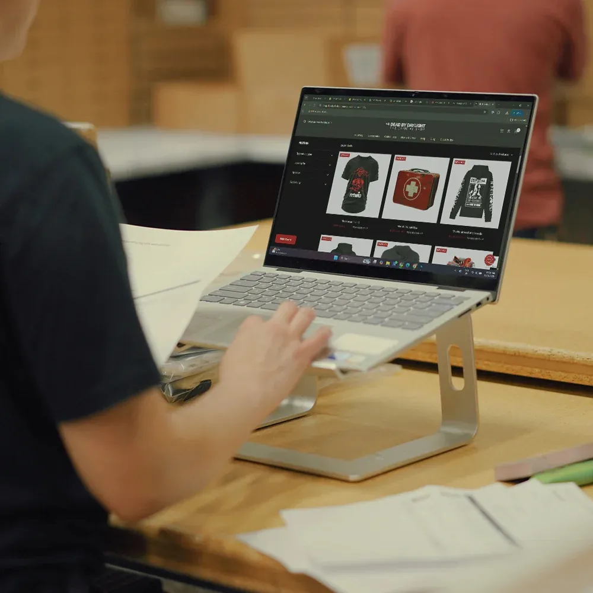

Jerseys, practice tees, warmups, hoodies, and the fan gear to match, printed and stitched in Warrenville, IL. Names, numbers, mixed sizes, no order minimums. Serving schools, leagues, and teams across DuPage County and all of Chicagoland.

A team uniform gets thrown in a bag, washed twice a week, and slid across turf. We print for that. Inks cured to survive the season, garments that hold their shape, and personalization pressed in-house so every roster spot gets the right name and number.

School spirit wear used to mean a paper order form, a cash envelope, and a volunteer chasing down sizes. We killed that. We build your school, club, or booster group a free online spiritwear store: families pick their gear, pay online, and we print, pack, and ship.
And because we run screen printing, embroidery, and DTF under one roof, your store can carry printed tees, stitched hats, and full-color hoodies without juggling three vendors.

We sit in Warrenville, in the middle of DuPage County, which means the teams we print for are our neighbors: Naperville, Wheaton, Glen Ellyn, Lisle, Carol Stream, Winfield, West Chicago, Aurora, and the rest of the western suburbs. Coaches see a proof before we print, and local pickup in Warrenville means no waiting on a shipping label.
More on the full FAQ page, or see how to order custom shirts for the start-to-finish process.
Send us the roster count, the garments you're thinking, and your logo. A real person quotes it fast and flags anything that won't print clean before you commit.